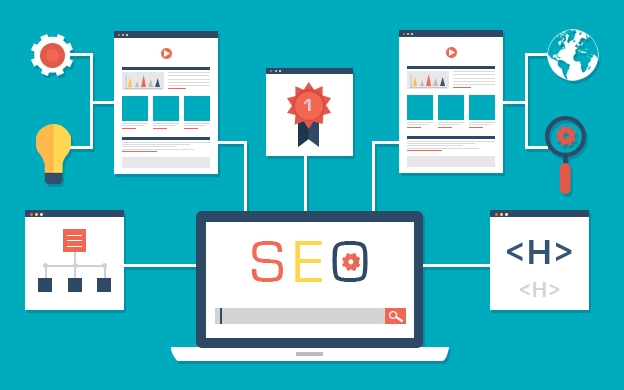
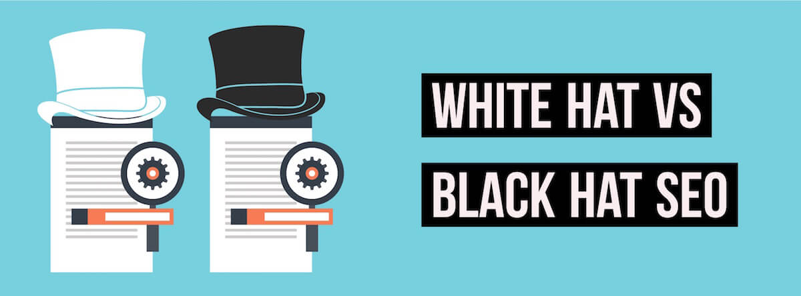
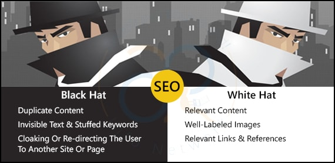

Chapter 1

It is the process of organizing the internet traffic of search results on search engines. This is a way of improving website to be on top of the list of searched results in a search engine, inwhich will help on maximizing the website's number of visitors.
Learning about search engine optimization can help you how to read a results page, find your ranking, and see how rankings affect businesses. It helps in increasing your website's visibility on search engines and attracting the right kind of traffic to the right pages on your site.
1. Previewing pages
Point at a result block, a chevron appears next to it (). Clicking on that chevron allows you to preview a document, letting you determine what kind of document is behind the link. It can help you decide whether that link meets your needs, and whether you want to visit the page.
2. Understanding an individual search result
Result blocks on a search results page consist of three major elements:
Title: It is the blue link at the top line that gives you the topic of the page.
Web address/URL: It is the second line containing a green link that gives you the location of the document on the web, and also this can help you determine the source of the data information.
Snippet: It is the last two lines all black text. It shows you some of the places where your search terms appear on the page, embedded in the text in which they appear. A snippet is not a complete summary of the text on a page instead it is only search terms in context which is extracted from the document.
3. Using an entire results page
You can gain a lot from looking over an entire screen of a page full of results because it is helpful to understand a result.

*Setting realistic goals*
A myriad of elements affect position with the search engines, and moving toward those top listings takes time and effort. You understand this, but do your stakeholders? Although SEO is an effective long-term investment, its results are not instantaneous like those of PPC. Setting realistic expectations out of the gate about how search engines work and the types of results you can realistically expect to achieve will do wonders in shaping perception.
Ask your SEO partner to provide detail that you can easily pass on to your stakeholders to help them understand the ins and outs.
You know that you can’t just “move” your organic listing to page one. Make sure the person who approves your budget understands that as well.
*Pulling everything together*
The longevity of your SEO Campaign is based on a multitude of factors that are typically rolled up into two outcomes – success or failure. Setting realistic goals, measuring your performance towards those goals over time and identifying conversion points all help paint an accurate picture of your SEO campaign.
Setting and managing expectations – your own as well as those of your stakeholders – will work wonders as you move through your SEO Program and prove your value.
*Setting a baseline*
One element of measuring success in any SEO campaign is time. Now that you’ve established your Calls to Action and identified all conversion points along the way, setting a baseline to measure progress over time couldn’t be more important.
Remember that search engines need some time to index your newly revamped web pages. Month to month comparisons tend to provide more realistic insight than day to day dips and spikes. Although daily changes can be interesting (and even slightly addictive) to note, be cautious in your reactions. Stay true to your SEO plan to understand the month to month implications of your SEO efforts. Don’t pull the plug on a well-thought SEO plan if you noticed a slight dip yesterday in the SERPs after you changed your heading tags.
Chapter 2

It is known as a form of Internet marketing that involves the promotion of websites by increasing the visibility of sites in a search engine results pages.
Both SEO and SEM aims in increasing visibility of website in search engines but Search Engine Optimization is a just a part of a Search Engine Marketing which is as widely known.
1. Domain Name Strategy
It proactively protects your brand online by reducing the chances for others to use the same brand name you have in their online activities or website URLs.
2. Link Building Strategy
It refers to the process of getting external pages to link to a page on your website.
3. Keyword Strategy
Your keyword strategy should involve selecting high-performing keywords that drive relevant traffic to your business. Choosing the right keywords for advertising can make all the difference in your campaigns, determining how well your advertisements rank on Google and other search engine platforms.
4. Title Tags Strategy
Title tags are part of the meta tags that appear at the top of your HTML inside the < head> area. Think of title tags like the title of the chapter of a book. It tells people and search engines what your page is about.Title tags are also part of what makes people decide whether to visit your site when it shows up in the search results. The title tag should contain important keywords to help the search engine determine what the page is about.
5. Meta Description Tags Strategy
Meta elements are HTML or XHTML elements used to provide information about a web page for the search engines and website users. A well-written meta description can give your site an advantage in search engine results pages (SERPs), resulting in more click-throughs to your site where you have more chances to convert that visitor into a lead or new customer.
6. Alt Tags Strategy
Alt tags make it possible for search engines to properly read and understand what an image is conveying. In other words, it’s one more element on your site for search engines to crawl and another chance for you to infuse your keywords (assuming the image is relevant to your keywords). It will also help you think more strategically about the images on your page to make sure you’re maximizing your targeted keywords.
7. Search Engine Indexing Strategy
Search engine indexing is the process of a search engine collecting, parses and stores data for use by the search engine. The actual search engine index is the place where all the data the search engine has collected is stored. It is the search engine index that provides the results for search queries, and pages that are stored within the search engine index that appear on the search engine results page.
It is very possible since it is important to make a website that is competitive in the Internet. I would choose the domain name strategy and linking strategy; simply because through linking strategy, there is a way for the website to be competitive in the SEO marketing. And domain name strategy, a unique and catchy name is necessary to catch the attention of the users. With these strategies combined, the website will be much more effective on search engines and specially on marketing.
Chapter 3

On-page SEO is the act of optimizing different parts of your web site that affect your search engine rankings. It's stuff that you have control over and can change on your own website. On-page SEO ensures that your site can be read by both potential customers and search engine robots. With good on-page SEO, search engines can easily index your web pages, understand what your site is about, and easily navigate the structure and content of your website, thus ranking your site accordingly. In short, it refers to all the things that you can do ON your website to help you rank higher, such as page titles, internal linking, meta tags & descriptions, etc.
Off-page SEO focuses on increasing the authority of your domain through the act of getting links from other websites. If you start filling the site with links, your pages are all going to rise to the top. This is how a site like Wikipedia ranks for pretty much everything under the sun. There's a score called "Domain Authority" that calculates how authoritative your website is compared to other sites. In short, it refers to all the things that you can do directly OFF your website to help you rank higher, such as social networking, article submission, forum & blog marketing, etc.
1. Page Titles
Your page titles are one of the most important SEO factors on your site. Each of your pages & posts should have its own unique title, which includes the main keywords for that page. This way, whenever someone searches for a certain page in a search engine, your post has a better chance of showing up because you have included those keywords.
2. Meta Descriptions
These descriptions are an important place to include relevant keywords for your content, as these are used within the search results when your page is listed. For instance, if we continue to use the page, then a good meta description for that page would include those keywords and related ones.
3. Meta Tags
For each of your pages, you can include a set of keywords in the form of meta tags. These should be all the relevant keywords of your content, which you will have researched previously.
4. URL Structure
Including search engine friendly URLs for each of your pages is highly recommended, as these bring better crawling. Shorter URLs seem to perform better in search engine results, however that is not the only factor. URLs that include targeted keywords, also perform better. The location of these keywords can also be a major influence.
5. Body Tags (H1, H2, H3, H4, etc.)
When writing your articles, you should break up your content into smaller sections & paragraphs to make it easier for people to read. These sections can be given heading, which is where H1, H2, H3, H4, etc. tags are used. Generally H1 tags are reserved for your main page title, with subsequent headings being issued H2, H3, etc. Search engines use these to determine what is important within your content. This is why keyword rich headines are more useful than generic ones. Make sure you write keyword rich headings in the order of priority in H1, H2 and H3 title tags. They are used by many crawlers to differentiate important content.
6. Keyword Density
Including relevant keywords throughout your content is very important, as it helps search engines work out what your content is about. However, try not to excessively repeat and overuse keywords just for search engine robots. This can lead to your site being banned from search engines. To avoid this, try to keep your keyword density to roughly 2-5%. If you find this hard, get out a thesaurus and broaden your writing vocabulary. This way, you are still writing about the same thing, without risk of being banned.
7. Image SEO
Using images within your content is a great way to make your site more visually appealing and break up boring chunks of text. You can utilise these images to help improve your site SEO. All your uploaded images have titles, so treat them just the same as your page titles. Including relevant keywords can help people find your site when searching on Google Images. You can also include Alt Text and Descriptions for your images, making them even more useful with SEO.
8. Internal Linking
Placing links to your other website pages, is a great way of improving your site and used properly, internal links can be a useful weapon in your SEO arsenal. Not only does it make it much easier for your visitors to navigate around your site and find all of your content, but it also ensures that your site gets properly crawled allowing the search engines to find all of your pages. It also helps to build the relevancy of a page to relevant keywords and phrases, whilst also helping to increase the Google PageRank of your pages. There are a number of different methods that you can use to improve your internal linking structure. The main being; content links and permanent navigation links.
1. Social Networking Sites
Social Networking is bigger than ever these days! Sometimes known as “Online Reputation Management”, getting involved with social media sites is the fundamental step with which you begin to advertise, market and build your online reputation within your niche. This allows you to extend your online network of contacts, to connect and interact with your friends, to share things with each other, and most importantly promote your website/blog and help build your online reputation.
2. Blogging
Blogging is one of the best ways to promote your website online! By writing a blog for your website, you give a reason for visitors to keep returning to your site and keep up to date with your latest posts. It also helps search engines to crawl your site more frequently, as they have to update your latest blog post entries, which ultimately helps you rank higher in search engine results pages (SERPs).
3. Blog Marketing
Post comments on other blogs within the same niche as yours, which allow you to add a link in the comments section. These links can then be crawled by search engines, helping to point them towards your site. These blogs are commonly referred to as “Do-Follow” Blogs.
4. Forum Marketing
Find forums online that are related to your sites niche and get involved within that community. Reply to threads, answer peoples questions, offer advice, etc. This all helps to build up your reputation as someone who is an expert within that niche. Try to use “Do-Follow” Forums so that you can include a link to your site within your signature, which helps search engines crawl your site.
5. Search Engine Submission
Search engines will eventually find your site online, but that can take a while. To speed everything up, you should submit your website to the most popular search engines like Google, Yahoo, Bing, etc.
6. Directory Submission
Many people may say that directory submission is dead! I believe that it isn’t as you are increasing the likely hood of people seeing your website. It is purely based on how effectively we are selecting those directories and how efficiently we are choosing the category for submission. You could submit to general directories, but for maximum effect, you are better off submitting to niche directories.
7. Social Bookmarking
Social Bookmarking is another great way of promoting your website. Submit your latest blog posts and pages to the most popular bookmarking sites, like StumbleUpon, Digg, Delicious, Reddit, etc. Search engines really like these types of sites because the content on these sites is updated very frequently. This may increase your website traffic based on how effectively you have participated.
8. Link Baiting
Link baiting is another popular way of promoting your site. If you produce a really popular unique post for your site, then other people may want to link to it. Perhaps you have copied/published another website’s content on your site, don’t forget to place their website link as a reference. Do it for others and, if your content is trustworthy, let others do it for you. This is another way to increase your link popularity.
9. Photo Sharing
If you have used any of your own photos or images on your site, then you can share then on many of the major photo sharing websites like Flickr, Picasa, Photo Bucket, etc. Other people will be able to see them and comment on them, hopefully following a link to your site.
10. Video Marketing
Just like photo sharing, if you have any videos that you have used on your site, then you can submit them to sites like; YouTube, Vimeo, etc. allowing people to find your content in other ways.
11. Business Reviews
Write reviews about others businesses or ask your friends/clients to write a review of your business in major business review sites like RateitAll, Shvoong, Kaboodle, Stylefeeder, etc.
12. Local Listings
Depending on your site’s niche, you might find that listing in local directories may be useful. You may have a website promoting your local business, therefore instead of going global and facing huge competition, listing your website locally, so that search engines can easily view your website and fetch the content, will be much better. This will help you to reach a targeted audience. Submit your website to sites like; Google Local, Maps, Yahoo Local, Yellow Pages, etc.
13. Article Submission
If you write your articles yourself, then you can submit them to popular article directory sites like; Ezine, Go Articles, Now Public, etc. This can help drive traffic to your site, whilst you can also gain some links to your site from other people.
14. Social Shopping Network
If you run an e-commerce website, then a good strategy for advertising and branding your products for free is to submit then to online shopping networks. By submitting your products to sites like; Google Product Search, Yahoo Online Shopping, MSN Online Shopping, and other major social shopping network sites like Kaboodle, Style Feeder, etc. then you increase the likelihood of people finding the products that you are selling.
15. Answer Questions
You can actively participate in answering questions on sites like Yahoo Answers. By answering and asking relevant questions on your site niche, you help to build up your reputation as someone that is an expert in your chosen field. You can place a link to your website in the source section if necessary so that people can easily find your site. If you don’t spam, this is another great way to increase your link popularity.
s
Chapter 4

The process of choosing the best url if there are set of other same urls is called canonicalization. The Google does canonicalizes an url and may pick the url that is the best representative from the set of same looking urls.
It is important especially in times of having the same url names and if you want to have your unique url as the best choice.

Photo Credit
A Status-Code contains 3 digits. The first digit of a Status-Code is the class of response while the succeeding two digits does not have any categorization role but is assigned like a name.
1xx: Informational
the request was received and process is continued.
2xx: Success
the action was successfully received, understood, and accepted.
3xx: Redirection
further action must be taken in order to complete the request.
4xx: Client Error
It means the request contains incorrect syntax or cannot be fulfilled.
5xx: Server Error
It means the server failed to fulfill an apparently valid request.

Photo Credit
1. Title Tag
The most important on-page factor is the title tag. Title tags are used by search engines to display the list of titles searched. Main keyword of your title tag must be always included at the start to help Goolge in establishing the topic of page and for displaying queries.
2. Meta Description Tag
elevant keywords of the content must be included in a description since it is used also in the result of listed pages when searched. Including a set of keywords will also help you form meta tags.
3. Image
Utilize the use of images to improve the site. Using of images in a web content to make a additional information visually and to make the site more appealing rather than having a boring all-text-site.
4. Text Link
A great way of improving sites are placing internal links. It can make visitors nagivate in your site and also ensures that site is properly crawled which will allow search engines to find all of your pages with complications.
5. NoFollowed Link
This is a way publishers can make search engines not count some of the particular links to other pages that serves as a vote and as in favor of that content.
6. Image Link
The text alternative for the image describes the function of the link provided If image is the only content of a link. When content of a link contains both text and images, the images may use an empty text alternative if text is enough to describe the purpose of the link. They must also have appropriate alt text if the images convey information beyond the purpose of the link.
1. Keeping Hyperlink Styles Simple
Hyperlinks should be easily distinguisehed from other types of text content in the site. If they are a different color from other types of text in a web page and when they are underlined to denote that the text is clickable, hyperlinks are considered most effective.
2. Style Link States Differently
It’s best to providing different styles for each link state to avoid confusing your users and to speed up visual recognition of hyperlinks on a web page.
3. Keep Hyperlinks Consistent
It is also a good idea to keep the hyperlinks and regular texts styled consistently to avoid the situation where users having to think whether a particular text is a link or not.
It is the incoming links to a webpage when a webpage links to any other page. It is a major factor for the ranking webpages. A page ranks higher on search engines if a page has a lot of backlinks.

Chapter 5

It is used to refer to visitors that comes to your website resulting from an unpaid search results. Users of search engines like Google or Bing to find your website are considered organic. The common way to increasing the organic traffic in your website is to continuously publish a quality and relevant content on your blog regularly.

Having search engine optimized web pages is a critical aspect to your overall website success. Good Search Engine Optimization improves the website's visibility and navigation for both in search engines and to users without altering the integrity and context of your site.

1. A Good Title
We all know that a good title that is catchy will always attracts the readers. But that’s because it’s so vitally important to any blog post’s success. It doesn’t matter how much time and effort you put into the writing of your blog post – if no one clicks on it because your headline is boring, you might as well not have written one at all.
Your blog title must be interesting. It doesn’t have to be funny or mysterious – of course, it sure helps if it is. But developing your title based on a few simple tips can make all the difference in the world.
2. Blog's Visual Appearance
Reading text on a screen is different from reading it on paper. There’s just something about the internet that has conditioned us to gravitate towards shorter blocks of text, and avoid long, dense ones, when online. Whereas a magazine article can have long paragraphs and complex sentences, blogs need to be visually broken up in some way, to create plenty of reassuring white space around and between the lines.
One way to accomplish this is to use bullet points. Numbered lists are also effective, as are subheaders. Short sentences and short paragraphs are necessary to keep readers’ attention. The ideal length for a blog post itself is a matter still under debate – some say shorter is better, as in 250 words or less, while others maintain that long, 1500 to 2000-word posts are more effective. 500-600 words is a common standard. But no matter how long the post, as long as it’s broken up into manageable chunks, it will look approachable to visitors.
3. Right Grammar and Spelling
Sorry to break it to you, but your high school English teacher was right – good, solid writing skills really are important in the business world. Even if you have an awesome blog topic, and do everything else right, the instant your grammar falters or your style becomes awkward, you lose all credibility with your reader. Think about it – how many sites have you visited, only to suddenly become distrustful and leave, because their writing was simply unprofessional?
Informal, conversational writing is one thing – it’s fine to break conventions now and again for the sake of sounding real. But demonstrating a lack of basic English language skills makes people nervous – if you can’t even be trusted to write a sentence correctly, how professionally will you really handle their business?
4. Having Keywords
Now here’s a more controversial subject. With Google’s constant algorithm changes, best practices change often in this area. But luckily, they seem to be changing for the better. The use of keywords in your blog post is necessary if you want people to be able to find you via search engines. But the days of stuffing your post full of the same two or three words or phrases over and over again is long gone – and in fact, was never the way keywords were meant to be used in the first place.
The key to keyword use today is to be natural. Write for humans, not for search engines. Do include four to eight keywords in your post, but only if and when they fit naturally in your content – never try to force one, and never repeat a keyword endlessly. That will only mark you as spammy in Google’s eyes. Keywords used in titles and subheaders are especially helpful, as Google sees those as more important. But here too, good writing comes first, and keywords come second.
5. Interlinking
Another controversial topic, interlinking is meant, at its heart, to provide the reader with a better experience on your site. We’ve all seen those blog posts where it seems like every other word or phrase is hyperlinked to another page – that is not what we want to emulate. Instead, a 500-word blog post should include only about 4-5 links to relevant content that will give readers a more in-depth look at a related topic. One link per every hundred words or so is a good rule of thumb.
But the real key here is relevancy. Link to something that is unrelated to the anchor text (the blog text you hyperlinked to the new page), and Google gets mad. On the other end of the spectrum, if you get too matchy-matchy, Google gets grumpy, too. Avoid “exact match” links as well, where your anchor text says “buy goldfish” and it’s linked to “yourwebsite.com/buy-goldfish.” Instead, try linking that page to “thinking of purchasing a goldfish?” or something similar.
6. Images and Visual Presentations
Humans have always been visual creatures, but the internet has made us even more so. Think of your own experience. Links to blog posts that appear in your Facebook feed without an image just don’t draw the eye, do they? But add a large, vibrant image that catches your attention, and suddenly, you notice the post, and are exponentially more likely to click on it.
Webpages with images are more appealing to us, as well, and make us more likely to stick around to read what they have to say. Including a great image is vital to your blog’s success.
7. Catches Attention
Finally, the way to achieve results from your blog post – the call to action. You need to end your post with a request. Tell your readers what you’d like them to do next. Visit your Facebook page? Check out your sale? Set up an appointment? Share their thoughts in the comments section? They won’t do it unless you ask.
8. Blog's Content
Finally, the way to achieve results from your blog post – the call to action. You need to end your post with a request. Tell your readers what you’d like them to do next. Visit your Facebook page? Check out your sale? Set up an appointment? Share their thoughts in the comments section? They won’t do it unless you ask.
Chapter 6
An ethical SEO always uses a standardized practices, delivers the project on its proper and create realistic evaluations. It also uses techniques that lead to good, effective and lasting results that rankings' growth is steady, much better performance and a better ROI. Using SEO ethics and commmiting to it is a good practice. The website owners gets the project quality, searchers get the results that they are looking for something relevant, and search engines or browsers are provided with the best high-quality pages that can be delivered to the searchers.
Black hat SEO techniques, encapsulated by spamdexing, entail manipulating how search engines perceive the relevance of a Web page in a way that is often inconsistent with the search engines' guidelines. Hidden text, cloaking, and blog comment spam are examples of black hat SEO.
White hat SEO techniques involve providing users with quality content that is accurate, relevant, and well-organized. Using relevant keywords in the title tag, h1 tag, and anchor text of inbound and internal links are examples of white hat SEO.
Grey Hat SEO is the practice of using technically legal methods to improve your site rankings, but which are ethically dubious, and could one day become black hat. As soon as the search engines become aware that people are using these techniques, they take steps to prevent them, which turns a grey hat technique into a black hat technique.

1. Unrelated Keywords, Keyword Stacking and Keyword Stuffing
Don't: Add irrelevant keywords to the copy for extra page hits and dont repeat keywords to the extent that it reads like gibberish in a sentence or image alt text.
Do: Keep the content focused on a specific topic so users find what they are searching for. Write sentences that make sense, have a reasonable keyword density, and that use semantically related words instead of endlessly repeating keywords.
2. Tiny Text, Hidden Text, and Hidden Links
Don't: Put illegible text at the bottom of the page, make the text the same color as the background, or format text or images that are visually undetectable as links.
Do: Write content that is intended to be read, contrast the text with the background color, and make links obvious.
3. Cloaking
Don't: Present search engines with one set of content and site visitors with another, tricking visitors from search engines into experiencing a page of substantially different content.
Do: Be honest and create Web pages that visitors want and expect to see based on the description on the search engine results page (SERP).
4. Doorway Pages or Gateway Pages
Don't: Haphazardly stuff pages with keyword phrases with the primary goal of achieving a high ranking and then automatically redirect visitors to a separate page.
Do: Create landing pages and information pages for humans that are rich in content.
5. Page Swapping and Duplicating Content
Don't: Get a Web page indexed and ranked and then change the page entirely. Copy a substantial amount of content from another website, with or without permission.
Do: Update Web pages regularly while keeping the overall topics of the pages intact. Quote in small chunks, cite sources, and write original content.
6. Spam Blogs, Comment Spam,Trackback Spam, Spam Ping an Referrer Spam
Don't: Blog using software that generates garbled text with keyword phrases for the sole purpose of getting visitors to click on ads. Automatically post links as comments on blogs to increase the number of inbound links. Abuse trackbacks with links to unrelated links on blogs. Notify ping servers of new content several times per minute to give the illusion that content is new. Advertise a website by making repeated requests using a fake referrer URL to websites that publicize referrer statistics.
Do: Put time into your blog posts to write something coherent, novel, and fresh. Post insightful and constructive comments related to the article or blog post. Let blog authors know about posts being referenced from legitimate sources. Set up blogging software to ping centralized services once when a blog post is published. Link to content that is relevant and allow readers to follow the links naturally.
7. Cybersquatting and Typosquatting
Don't: Register a domain with a trademarked word in the name with the intent to profit off of the association. Register a domain name that is a misspelled version of a popular website or a competitor in an attempt to mislead visitors.
Do: Brainstorm and research relevant keywords for an easy-to-remember domain name relevant to the content the website will host. Make a website that becomes popular for its richness in content.
8. Cookie Stuffing and Social Networking Spam
Don't: Stealthily place affiliate cookies on computers. Target demographics on social networking sites and message people with advertisements.
Do: Link to retail websites with affiliate links to earn a percentage of sales. Network, find people with similar interests, and exchange contact information when there is mutual interest.

1. SEO Squatting
Buy up expired domains which are relevant to your keywords and then add some pages of content with a few well-placed backlinks to your site. Make sure that the new content is good quality and not too different from what the website hosted before. Put some adwords on the new content and then do some satellite SEO on it to keep up its trust rank.
2. Redesign your website at regular intervals
Even if the content is more or less the same, because the code and text changes, google thinks that this is fresh content.
3. Add a comments box to your site pages and invite anyone to comment
Sure it could get you 9 million spammers to put their links on there, but if you only approve the less spammy ones and then replace their links with a rel=nofollow tag, this means that you get no backlinks bleeding your page rank, but what you do get is lots of fresh content with hopefully relevant text for no effort on your part.
4. Link yourself higher
Whenever you put a comment on any blog, always make an excuse to link back to yourself. While you're at it, get into the habit of being very helpful. Join forums where you can post solutions to other people’s problems. Moneysavingexpert.com is a great one as it gets lots of traffic and has a plethora of relevant topics.
5. Fabricate news
News websites are desperate for content, and quite a few of them have very lax authentication procedures. If you can fabricate some news and maybe get yourself a few backlinks or twitter shares on the back of it, then you can potentially get a lot of traffic.
6. Charity links.
Select a few relevant small charities, make a small donation and write an article about the good work that they do with a link to their donation page and then ask them to link back to you as thanks: paid links but without the google penalty.
7. Use Keyword Association Manipulation
This is when you associate two unrelated keywords together to try to fool bots into thinking that they are related or synonymous. This is quite an advanced technique and takes a lot of work to achieve on highly competitive keywords.
8. Use a subscription based service to hide non relevant content
A bit like cloaking, you are showing different content to spiders, but if you have a subscription based service - even if it’s just a 'click here to prove you are over 12 years old' button, you can get away with having one set of content for spiders (and people who claim to be under 12 - in which case they would get a less interesting set of pages about the joys of power tools) and another set for most other people.
9. Spun Content
This is copying content from another site but changing some words around so search engines cannot automatically spot the plagiarism. Another method is to take content from more than one page- like they say, "copying from one source is plagiarism, copying from more than one source is research" A good way to do this is to use lists like X SEO techniques then steal some items from other peoples list and compile your own. If you add a few extra ideas in, it becomes your own.
10. Pay for reviews
there are plenty of people out there who write reviews on websites in exchange for money. The blogwhores will write about any old subject as long as they are getting paid, and this is perfectly legal.